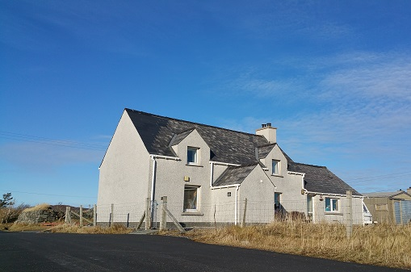

In direct sight of the famous Callanish Stones, the croft-house at 25 Callanish has been in the family since XYZ. Accommodating up to 6 in a ground floor double bedroom and two loft rooms, the recently refurbished (Dec '17) cottage is centrally heated throughout, has a modern kitchen with all amenities while retaining the original living room open fire.
Callanish House
Location
The house is only ten minutes walk from the famous and historic Callanish Stones and Visitor Centre. Its situation on the island is fairly central and hence not too far from the shops and restaurants of Stornoway and equally a short drive to the beaches of the North-West coast.
Travel to 4 Callanish is very straightforward either by air to Stornoway from Glasgow, Edinburgh or Inverness or by sea from Ullapool. It is then 30 minutes to Callanish by car or bus. A further ferry from Skye serves Tarbert on the Isle of Harris, just over an hour’s drive from Callanish
History
The present house was built around 1905 in the traditional style on top of an earlier black house. It became derelict in the 1980s and was bought by us in 2005 as a small-scale ‘Grand Designs’ adventure. Since then it has been meticulously restored to a high standard, preserving the traditional exterior features and appearance, but with a modernised interior, being completed in 2011.
This is our own holiday house, which we use ourselves and it is furnished with some of our family furniture. We are very pleased to share it with you!